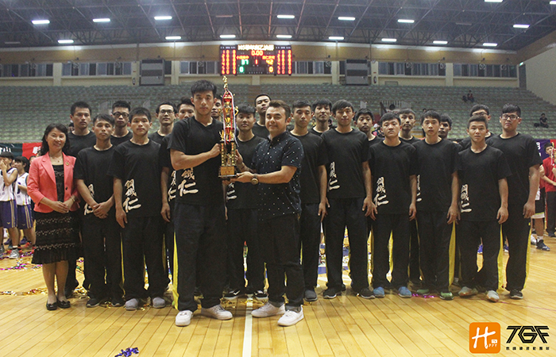

貼文時間：2017/05/29

105學年度立仁高中，勇奪高中籃球乙組第二名。激情過後，重返校園，學生本分，從！未！改！變！
由陳志函教練領兵的立仁高中，在南區複賽大獲全勝，是各隊教練敬佩的隊伍。八強賽尚未開打，立仁高中奪冠聲呼聲四起，震耳欲聾。可球是圓的，誰都沒有把握可以笑著拿金盃離開球場。
八強賽打完語帶遺憾的教練，失落的表情，那個畫面深至人心。花工一役，教練表示：「很深刻，那場比賽我們上半場落後快二十五分，氣勢都被帶著走，但中場休息時間，我記得大家圍繞在一起，我說不要去在乎輸贏，快樂打球，放開就好。果不其然，下半場，我們放開來打，效果好多了，一分一分地追，最後方能拿下勝利。」 在立仁，全體一心，毫無雜念，籃球至上。
看著自己的子弟兵們一路蛻變成長，鋼鐵教頭陳至函教練心裡感動油然而生，表示：「第二名，已經夠滿意了，雖然很遺憾。本來還很擔心這批球員沒成績的，幸好他們很爭氣。」「鬥志」以及「韌性」，在立仁身上展露無疑，經過八強的洗禮後，相信下屆更值得期待。
鄒族戰士洋駿豪，曾讓教練失望，但回歸後的態度表現讓教練稱讚有加，愛面子的他表示：「其實，那時候我很想回來，只是拉不下面子道歉而已。而且那時候回來還跟教練賭氣說我只打一場喔。」回想起那段往事，教練與駿豪兩個人笑了許久。教練表示：「前幾天，駿豪第一次來找我說內心話，我有嚇到，但那晚我們說了許久，我想這就是籃球的魅力吧。」籃球讓人改變了好多好多喔，年少輕狂與現在成熟穩重的駿豪截然不同。現在的他，可是球隊的小教練，拿著哨子教導著學弟們，那畫面讓人無限感動，想當初他是教練的頭痛球員，現在卻是教練的左右手。用自己的方式來幫助球隊，為球隊付出，這就是感恩。
一個動作，一份情感，一條心，這就是立仁。語重心長的教練表示：「不論未來還有沒有要繼續打球，都要保持熱愛籃球的熱忱與態度，因為球場上好比社會，是一個小型團隊，以後社會上又更多險惡等著你，把球場上態度帶去職場上那你起碼就成功一半了，因為你不會去害怕面對。」
一代傳一代，高三選手即將畢業離開立仁，即便心中萬分不捨，還想拚座冠軍，但考量現實未來，大家還是決定往大學這條路發展，面對高年級主力畢業多的情況下，銜接上立仁目前實力還在做調整，教練表示：「目前敗少勝多，但這都是必經的過程，慢慢累積實力調整，相信我們並不會差去哪裡。」未來一百九十一公分禁區門將韋豪是否能撐起立仁，就看這個暑期的訓練與整合了。從新洗牌的立仁，真正的挑戰現在才要開始，但相信他們依舊能在眾多列強當中大放異彩的。